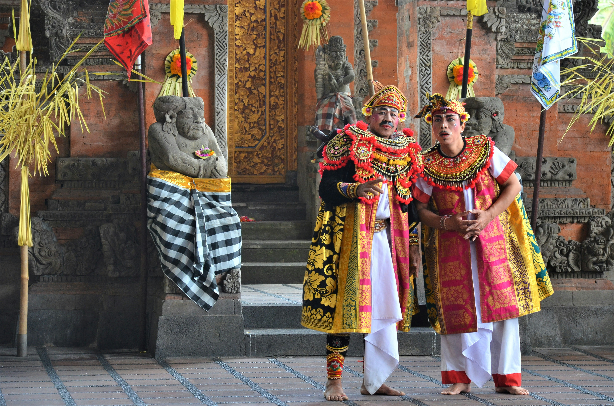
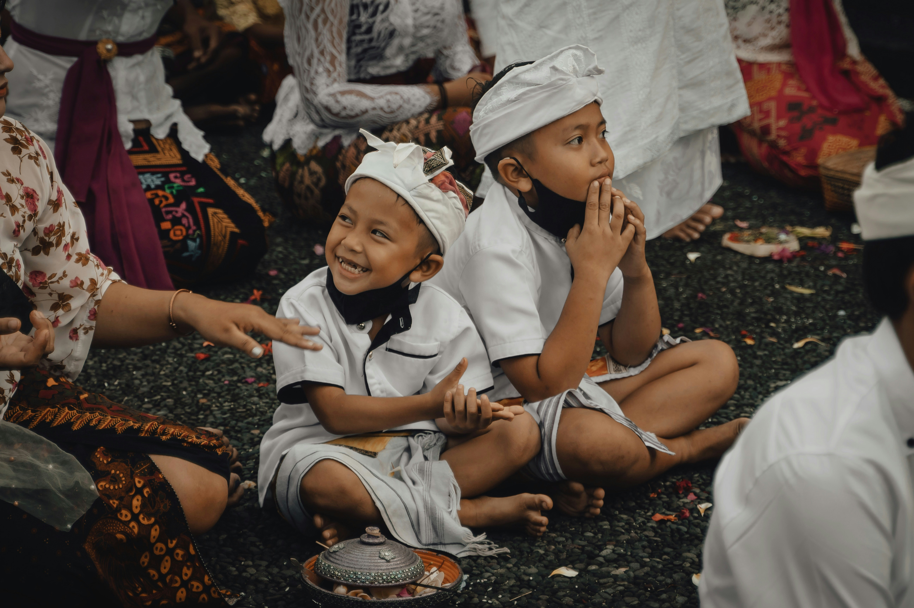
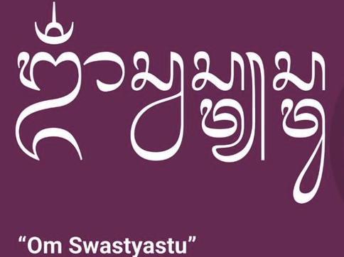

Anggah-Ungguh Basa: Seni Berbicara di Bali
Bahasa Bali memiliki sistem tingkat tutur yang sangat unik dan kompleks yang disebut Anggah-Ungguh Basa. Sistem ini bukan sekadar aturan tata bahasa, tetapi cerminan mendalam dari nilai-nilai budaya Bali yang sangat menjunjung tinggi sopan santun, hierarki sosial, dan rasa hormat dalam setiap interaksi manusia.

Penggunaan tingkat tutur disesuaikan dengan siapa lawan bicara kita—apakah orang yang lebih tua, memiliki status sosial lebih tinggi, atau teman sebaya. Kesalahan dalam memilih tingkat tutur dapat dianggap tidak sopan atau bahkan menghina, sehingga anak-anak Bali diajarkan sejak dini untuk memahami dan menggunakan sistem ini dengan benar.
Yang menarik, sistem Anggah-Ungguh Basa ini tidak hanya berlaku dalam percakapan lisan, tetapi juga dalam tulisan, bahkan dalam pikiran dan doa. Ini menunjukkan betapa dalamnya nilai kesopanan tertanam dalam kesadaran masyarakat Bali.
Tingkatan dalam Bahasa Bali
Secara umum, Anggah-Ungguh Basa dibagi menjadi beberapa tingkatan utama yang harus dikuasai oleh penutur Bahasa Bali:
Bahasa Alus (Bahasa Halus) adalah tingkat tutur paling sopan dan formal, digunakan ketika berbicara kepada atau tentang orang-orang suci seperti pendeta (pedanda), bangsawan, atau dalam konteks keagamaan. Kata-kata dalam bahasa alus sangat berbeda dari bahasa sehari-hari dan memiliki kosakata tersendiri yang harus dipelajari secara khusus.
Bahasa Madia (Bahasa Menengah) adalah tingkat tutur yang digunakan kepada orang yang dihormati seperti orang tua, guru, atau orang yang lebih senior. Ini adalah tingkat yang paling umum digunakan dalam interaksi sosial formal sehari-hari.

Bahasa Andap atau Kasar (Bahasa Biasa) digunakan untuk berbicara dengan teman sebaya, orang yang lebih muda, atau dalam konteks informal. Meskipun disebut "kasar", ini bukan berarti tidak sopan dalam arti negatif, tetapi lebih pada tingkat formalitas yang rendah.
Kompleksitas sistem ini membuat bahasa Bali menjadi salah satu bahasa yang paling menantang untuk dikuasai, bahkan bagi penutur asli. Tidak mengherankan jika generasi muda Bali saat ini menghadapi kesulitan dalam menguasai semua tingkatan tutur ini, terutama dengan dominasi Bahasa Indonesia dalam pendidikan formal.
Aksara Bali: Tulisan Penuh Filosofi
Aksara Bali adalah sistem penulisan tradisional yang indah dan penuh makna filosofis. Diperkirakan berasal dari aksara Brahmi India dan berkembang di Nusantara, aksara ini masih diajarkan di sekolah-sekolah di Bali hingga kini, meskipun penggunaannya dalam kehidupan sehari-hari sudah sangat berkurang.

Sistem aksara Bali terdiri dari Aksara Wianjana (konsonan dasar) yang berjumlah 18 huruf, dan Aksara Swalalita (vokal independen) yang berjumlah 9 huruf. Selain itu, terdapat berbagai tanda baca yang disebut pangangge yang rumit dan memiliki fungsi untuk memodifikasi bunyi konsonan dasar.
Setiap goresan aksara tidak hanya membentuk kata, tetapi juga menyimpan nilai-nilai filosofis dan spiritual. Dalam tradisi lontar (naskah kuno berbahan daun lontar), aksara Bali digunakan untuk menulis teks-teks suci Hindu, sastra klasik, dan pengetahuan tradisional tentang pengobatan, arsitektur, hingga astronomi.
Keindahan aksara Bali juga menjadikannya populer sebagai elemen dekoratif dalam seni rupa, arsitektur, dan bahkan tato. Namun, di balik keindahan visualnya, terdapat makna sakral yang harus dihormati—aksara ini bukan sekadar hiasan, tetapi medium komunikasi dengan dimensi spiritual yang mendalam.
Contoh Frasa Sehari-hari
Untuk memberikan gambaran praktis, berikut beberapa frasa dasar dalam Bahasa Bali yang sering digunakan dalam kehidupan sehari-hari:
- Om Swastyastu — Salam pembuka yang bermakna "Semoga dalam keadaan baik oleh rahmat Tuhan Yang Maha Esa." Digunakan saat bertemu seseorang, terutama dalam konteks formal atau keagamaan.
- Matur Suksma — Berarti "Terima kasih" dalam bahasa Bali yang sopan. Ucapan ini menunjukkan rasa syukur dan penghargaan yang mendalam.
- Punapi gatra? / Sapunapi gatra? — Cara bertanya "Apa kabar?" Jawaban umum: Becik-becik manten yang berarti "Baik-baik saja."
- Suksma — Versi informal dari "Terima kasih". Ampura — Berarti "Maaf" atau "Permisi". Keduanya menunjukkan nilai kesopanan dan kerendahan hati dalam budaya Bali.